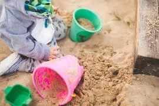
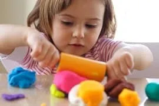
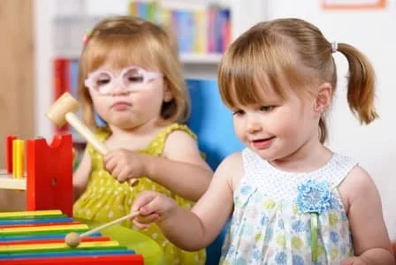

Placówka opieki nad dziećmi do lat 3 · Olsztyn-Kortowo
Tu Mały – Wielki Człowiek odkrywa świat
Kameralny „Uniwerek” na kampusie Uniwersytetu Warmińsko-Mazurskiego. Zapewniamy maluchom od 1. do 3. roku życia troskliwą opiekę, spokojną i przyjazną atmosferę oraz zajęcia wspierające ich rozwój.

- Dla kogo
- dzieci od 1. do 3. roku życia
- Godziny pracy
- 7:00–16:00
- Gdzie
- ul. Oczapowskiego 9, Kortowo
Dlaczego my
Miejsce stworzone z myślą o rodzicach z uczelni
Z radością zapraszamy Państwa do Placówki opieki nad dziećmi w wieku do lat 3 „Uniwerek” – dla dzieci od 1. roku życia (jeżeli rozwój psychomotoryczny dziecka na to pozwala) do końca roku szkolnego, w którym dziecko ukończy 3. rok życia, a gdy objęcie dziecka wychowaniem przedszkolnym jest niemożliwe lub utrudnione – 4. rok życia.
Placówka powstała dzięki porozumieniu Stowarzyszenia Oświata – Wychowanie – Aktywizacja „SOWA” i Uniwersytetu Warmińsko-Mazurskiego w Olsztynie. Naszym wspólnym celem jest przyjazne, kameralne miejsce o wysokim standardzie, spełniające potrzeby i oczekiwania Maluchów oraz Was, Rodziców.
Pragniemy wspierać studentów, doktorantów oraz pracowników akademickich w profesjonalnej opiece i mądrym wychowaniu ich Pociech. Wiemy, jak trudno łączyć naukę i pracę z rodzicielstwem – dlatego szczególnie do Was kierujemy naszą ofertę.
Kim jesteśmy
Miejsce tworzą ludzie
Pracą placówki kierują dwie mamy, które same doświadczają wyzwania, jakim jest łączenie rodzicielstwa z pracą naukową:
- dr Anna Godlewska-Zaorskadoktor nauk społecznych
- dr Bernadetta Olender-Jermaczdoktor nauk społecznych
Kadrę placówki stanowi zespół wysoko wykwalifikowanych, kreatywnych i cierpliwych opiekunek. Ciepła atmosfera i indywidualne podejście do dziecka sprawiają, że Maluchy czują się u nas dobrze.
Jako osoby od lat związane z Uniwersytetem Warmińsko-Mazurskim w Olsztynie, korzystając z zasobów Uczelni, stworzyłyśmy na jej terenie miejsce opieki dla najmłodszych. „Uniwerek” tworzą ludzie z pasją, o wielkich sercach, dla których praca z najmłodszymi to powołanie.
Koncepcja
Zadbaliśmy o profesjonalną koncepcję pracy
Założenia programu oparte są na dyskursie konstruktywistyczno-społecznym. Wiele inspiracji czerpaliśmy z Programu Zabaw FundaMentalnych oraz Teorii Inteligencji Wielorakich Howarda Gardnera.
-

Z myślą o najpełniejszym rozwoju
Tworzymy kameralne środowisko dostosowane do potrzeb dzieci. Dbamy o bezpieczeństwo, funkcjonalność i higienę otoczenia.
-

Wspólnie działamy na rzecz dziecka
Kontakty z Rodzicami opieramy na wzajemnym zaufaniu i zrozumieniu. Informujemy o koncepcji pracy placówki, postępach dziecka i ewentualnych trudnościach.
-

Uczenie się przez zabawę
Stymulujące otoczenie, materiały i pomoce dydaktyczne zachęcają dzieci do podejmowania wielokierunkowej aktywności.
-

Samodzielność krok po kroku
Wspieramy proces odkrywania oraz stopniowego przejmowania inicjatywy przez dziecko. Pobudzamy samodzielność!
Jak pracujemy
Dziecko jest cudem – jedynym, wyjątkowym i niezastąpionym
Odpowiadając na otwartość dziecka, jego ciekawość świata, radość eksperymentowania i potrzebę komunikowania się z otoczeniem, zaplanowaliśmy zajęcia obejmujące rozwój fizyczny, intelektualny, emocjonalny i społeczny.
Zajęcia prowadzimy w sposób naturalny, zgodnie z możliwościami i potrzebami dzieci. Program zawiera bazę zabaw i gier, które dają dziecku radość, ale mają też swój cel – uczą. Wykorzystujemy zabawę, ruch i dużą wrażliwość dziecka na bodźce. Przecież Maluch poznaje najbliższe otoczenie wszystkimi zmysłami!
Sięgamy po rysunki, karty z obrazkami, plansze i plakaty. Uczymy słuchania i obserwacji poprzez czytanie ciekawych książek, słuchanie muzyki i słuchowisk. Stawiamy na swobodną, nieskrępowaną, twórczą zabawę – typową dla wieku dziecięcego.
Zajęcia
Co robimy na co dzień
-
Dwie rączki mam
zajęcia plastyczno-techniczne
-

Muzyka dla Smyka
zajęcia muzyczno-ruchowe
-
Ciszki, syczki, szumki
zajęcia logopedyczne
-
Entliczek-pentliczek
zajęcia literackie, małe formy teatralne
Plan dnia
Dzień w Uniwerku
Ramowy rozkład dnia – elastyczny i dostosowany do potrzeb dzieci.
- Kukuryku – czas zacząć
- Wesołe dzień dobry – schodzenie się dzieci, zabawy integracyjne na dzień dobry
- Pląsy i podskoki – zabawy ruchowe przy muzyce
- Śniadanie – przygotowanie do śniadania, wspólny posiłek
- ABC w toalecie – nawyki higieniczne, nocnikowanie
- Ucząc bawić, bawiąc uczyć – zabawy edukacyjne i ogólnorozwojowe
- Obiad – II danie – przygotowanie do obiadu, wspólny posiłek
- Sjesta – zajęcia relaksacyjne przy łagodnej muzyce, odpoczynek, drzemka
- Zupa – przygotowanie do zupy, wspólny posiłek
- Radosny czas zabawy – zabawy swobodne według inicjatywy Maluchów
- Pa, pa – do zobaczenia
Kontakt
Skontaktuj się z nami i dowiedz się więcej
- Adres
- ul. Michała Oczapowskiego 9
10-719 Olsztyn (Kortowo) - Telefon
- +48 532 604 007
+48 668 530 006 - uniwerekolsztyn@gmail.com
- Godziny pracy
- 7:00–16:00
ul. Michała Oczapowskiego 9, Olsztyn
Mapa ładuje się z Google Maps dopiero po kliknięciu.
Otwórz w Google Maps ·
OpenStreetMap